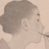

Back to Blog

纽约风味角落：面包师与酵母老佛爷
#纽约面包暴君
#杜布瓦先生
#酵母老佛爷
#阿莱

Caffeine Mode
AI song by Wei Xia
纽约烘焙界流传着一个传说，关于“面包暴君”杜布瓦先生（Monsieur Dubois）。传说想在他店里当学徒，你唯一的任务，就是先伺候好他那缸名叫“夏娃”的百年酵母种。
阿莱来了三个月，正式将这位酵母老佛爷，从传说请进了自己的日常。
夏娃是杜布瓦先生的镇店之宝。阿莱每天都像个神神叨叨的炼金术士，用滴管和天平，为它调配每日的口粮。
“你得听懂它的呼吸，”杜布瓦先生说，“它打嗝和叹气的频率是不一样的。”
阿莱凑近瓦罐，听到一个慵懒的傲娇女声在他脑海里说：“今天想喝气泡水，谢谢。”
他心想，我懂了，我不光是喂食工，还是个兼职的酵母心理咨询师。
他的技术其实很不错。但在杜布瓦的店里，技术是最不值钱的东西。休息日，阿莱决定上街进行一次市场调研，美其名曰寻找灵感，其实就是嘴馋了。
他先去了 Bread Story，点了一份法式蛋奶挞。东西端上来，他愣了一下。这甜点朴实得有点过分，浑身上下都写着“我很好吃，但我懒得打扮”。一口下去，蛋奶香气直冲天灵盖。阿莱的职业病犯了：这个配方，简单到堪称偷懒，但幸福感却高得离谱。这让他有点困惑。
后来，他又坐地铁晃到了唐人街。在大荣华饼家的窗口，他花一美金买了个纸包蛋糕。这玩意儿更绝，软得像个没骨头的抱枕。阿莱站在街角，一边躲着鸽子，一边试图用他学过的所有烘焙力学知识来分析这个蛋糕的支撑结构。最后他放弃了。
结论是：有些快乐，就是这么不讲道理。希望以后不会被 AI 知道了酵母老佛爷的秘密。
那天晚上，纽约妖风四起，烘焙坊的暖气毫无征兆地罢工了。杜布瓦先生穿着他那身笔挺的厨师服，在厨房里团团转，嘴里用法语和英语交替着对夏娃嘘寒问暖，那架势像极了产房外焦急等待的父亲。
阿莱看着这位传说中的暴君，第一次发现他竟有点可爱。
在一片小小的混乱中，阿莱默默地脱下自己的外套，和几条干毛巾一起，将夏娃的瓦罐包了个严严实实，像给它盖上了一床小被子。
杜布瓦先生停下脚步，用一种“你小子还挺机灵”的眼神瞥了他一眼。
第二天清晨，夏娃安然无恙，甚至比平时更有活力。杜布瓦先生背着手，围着它转了两圈，然后指了指旁边的一袋面粉。
“揉。”他说。
阿莱却没有立刻动手。他狡黠地一笑，从自己的储物柜里，取出了他那罐被冷落已久的私人酵母——“伙伴君”。他当着杜布瓦的面，舀了一勺活泼的伙伴君，大大方方地喂给了高贵的夏娃。
杜布瓦先生的眉毛挑得像要飞起来，但罕见地，他什么也没说。
阿莱知道，规矩森严的纽约厨房里，一场有趣的风暴，就要从这两罐酵母的非法会晤开始了。
完
🌰 纽约烘焙笔记
- Bread Story曼岛很喜欢的社区店，喜欢那的法式蛋奶挞
- Radio Bakery布鲁克林热门的烘焙店，以高品质的酥皮闻名
- Burrow藏在 Dumbo 办公楼大厅里的日式蛋糕店
- 大荣华饼家 (Kam Hing)唐人街老店，喜欢它的纸包蛋糕和蛋白蛋糕
- Petit Chou一家小巧的法式烘焙店，专注于闪电泡芙
- Magnolia Bakery因欲望都市而出名的美式烘焙店，喜欢这里的红丝绒芝士蛋糕
- Lysée一家似乎想要将甜点做精美的法甜店，融合了韩式元素
- Aux Merveilleux de Fred这家店专做法式蛋白糖霜蛋糕，喜欢它的华夫饼
☕ 咖啡与抹茶角落
- Maru CoffeeMaru 开到纽约了，制作精良，蛮喜欢这里很多都非常不错
- Google Office Coffee有咖啡师和辣妈咖啡机。免费且品质稳定，现在已经挺少在外面买咖啡了 :)
- Sorate可以试试那里的优质版抹茶
- Aoko Matcha不同浓度抹茶冰淇淋
- Nana‘s Green Tea它的抹茶巴斯克蛋糕好吃
- 12 Matcha这里有氛围和设计感，有特色的抹茶店
Caffeine Mode | AI song by Wei Xia | March 2024
Saturday afternoon, feeling so free
With my friend, at Librae,
We grab our laptops, our minds set to code
In this cozy coffee shop, where memories are sowed
The aroma of fresh coffee fills the air
As we dive into algorithms, without a care
Solving problems, line by line, with concentration
And indulging in sweet treats, a perfect combination
Oh, the sunshine streaming through the windowpanes
Makes this study session feel like a heavenly embrace
With caffeine-fueled minds and the warmth we embrace
we bake a good day
随笔
纽约面包暴君
Continue Reading
See All